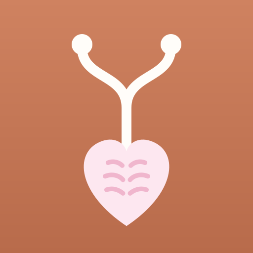
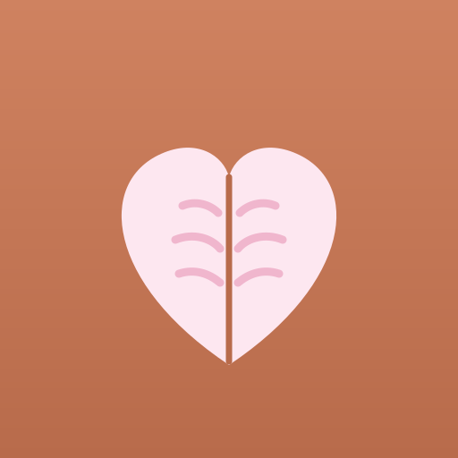

Steteskobun ucu kalpli kitap: hortum doğrudan kalbe iniyor.

Açık kitabın üstünden filiz çıkıyor: öğrendikçe büyüyorsun.
Sayfaları kalp olan kitap: emekle sevgi bir arada.

Yeşil zeminde, yaprak kollu bir “Y” ve minik bir kalp.